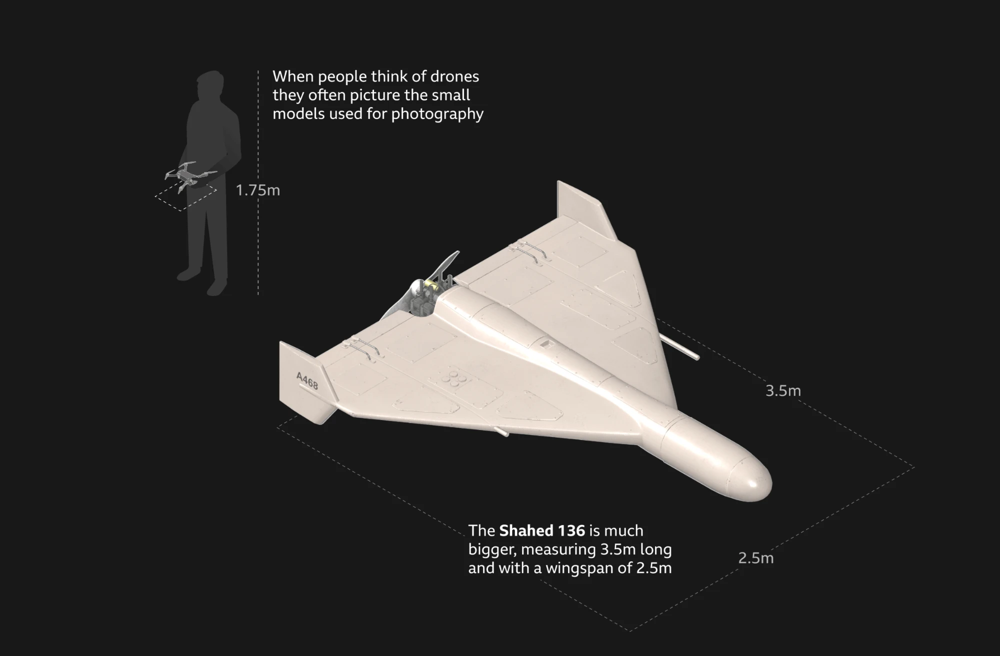
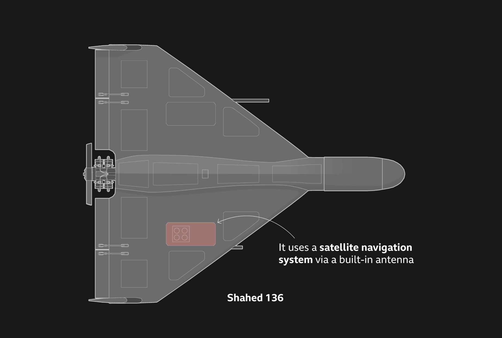
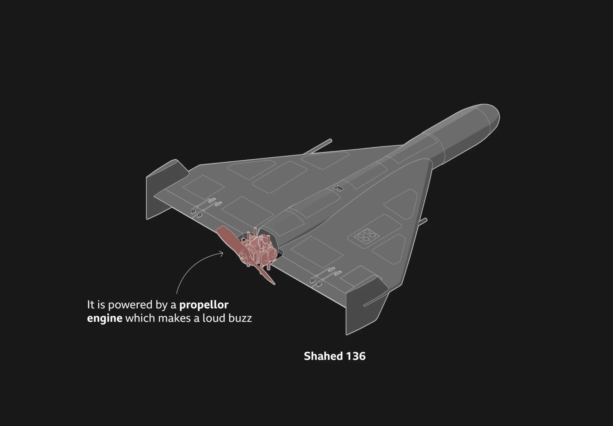
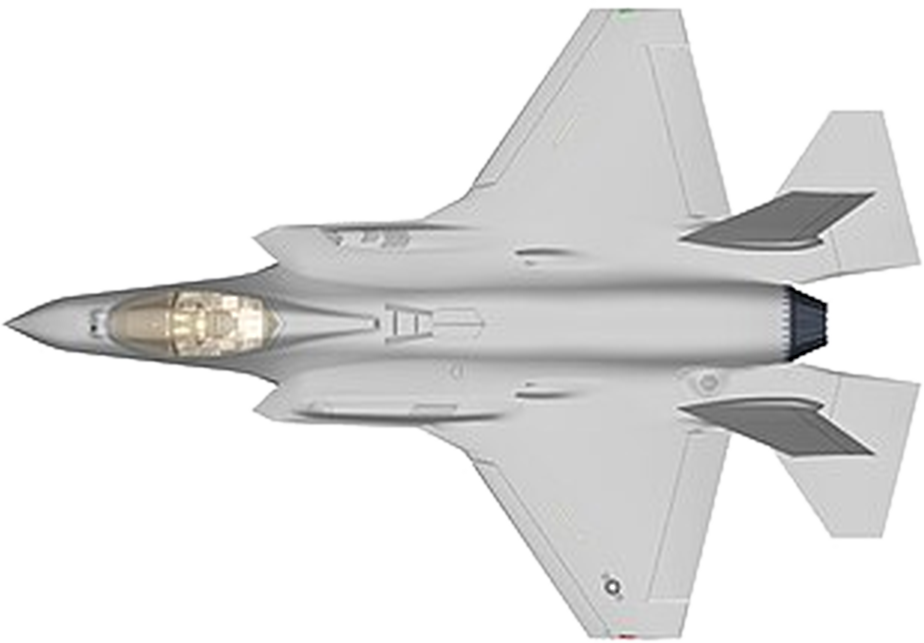
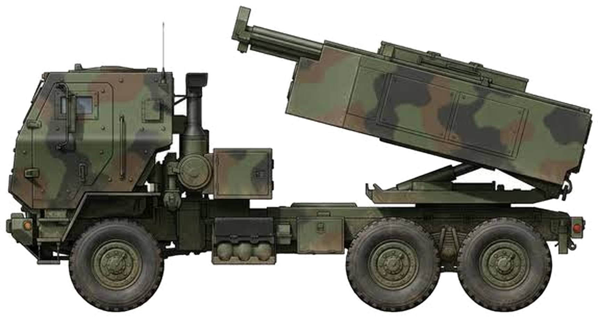
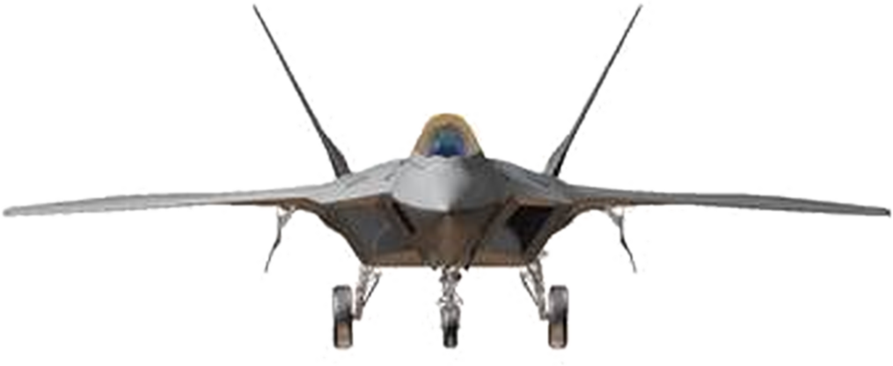

2026 年 2 月 28 日凌晨，美國與以色列對伊朗發動代號「史詩怒火」的空襲。開戰首日，伊朗最高領袖哈米尼身亡，美軍在 24 小時內打擊了超過 1,000 個目標。
伊朗沒有對等的空軍可以還手。它選了另一種打法：便宜的無人機。
據 BBC 報導，開戰六天內，伊朗就向中東各地發射了超過 2,000 架低成本無人機，目的是壓垮對手的防空系統，並在整個區域製造混亂。

圖：BBC News〈How Iran is using cheap drones to cause chaos across the Middle East〉，Visual Journalism team，2026/3/6
伊朗位在波斯灣北岸。周邊的波灣國家，幾乎都有美軍駐紮。
伊朗的還擊，多數落在這些美國盟友身上：伊拉克、科威特、巴林、卡達、阿聯、沙烏地阿拉伯，甚至遠到地中海的賽普勒斯。
被瞄準的不只是軍事基地。美國海軍第五艦隊在巴林的總部、杜拜棕櫚島的飯店、沙烏地最大的煉油廠、卡達的液化天然氣出口站，都遭到攻擊或被迫停擺。
主角是 Shahed-136 無人機。它的最大航程約 2,500 公里，從德黑蘭出發，可以一路飛到雅典。
地圖依 BBC News（2026/3/6）報導內容重新繪製，僅標示報導中點名的國家與地點｜底圖：Natural Earth
便宜，才是它的武器
Shahed 的設計很簡單。它不能在空中遙控，而是在發射前就設定好路線，靠衛星導航自己飛向目標，撞上去才引爆。
它飛得不快，但機身小、飛得低，專門盯著飛彈的雷達很難發現它。俄羅斯在烏克蘭戰場上大量使用的，就是同一款設計。


圖：BBC News〈How Iran is using cheap drones to cause chaos across the Middle East〉，Visual Journalism team，2026/3/6
美軍甚至仿造了一款，叫做 LUCAS，並在這場戰爭中首次投入實戰。美軍中東地區指揮官庫柏上將說，他們把伊朗的設計改得更好，再打回伊朗。
真正的問題在價錢。
據 BBC 報導，一架伊朗製的 Shahed-136，估計只要新台幣 63 萬到 158 萬元。
而用來攔截的愛國者 PAC-3 MSE 飛彈，一枚大約要 1.3 億元。
就算用無人機最貴的價錢來算，一枚攔截彈的錢，也可以買 82 架無人機。
用最便宜的價錢算，是 205 架。進攻的一方花小錢，防守的一方花大錢。
無人機單價：BBC News（2026/3/6）｜攔截彈單價：公開報導估計值（Quwa、Defence Security Asia）｜倍數為本文計算
阿拉伯聯合大公國表示，射向該國的伊朗無人機超過 1,000 架，只有 71 架突破防線。攔截率很高，但每攔一架，都要付一次帳單。
美國企業研究所的伊朗專家 Nicholas Carl 向 BBC 表示，逼美國和盟友耗盡攔截彈庫存，本來就是伊朗戰略的一部分。
無人機被打了下來，
帳單卻留著
示意圖：夜空中的攔截彈軌跡（2021 年，以色列鐵穹系統，非本次戰爭）｜圖片來源待補
攻方省了成本，守方保住了安全。
帳本上還有第三方：
製造那枚攔截彈的公司。
因為每打掉一枚，防守方就得再買一枚。
要看懂這件事，得先知道這門生意是怎麼來的。
二戰以前，軍火生產跟著戰爭起落；二戰以後，才變成常設的產業
今天的軍工巨頭並不是一直都在。二戰以前，各國的武器由國營兵工廠和少數民間大廠製造，例如德國的克虜伯、英國的維克斯。這些工廠的規模跟著戰爭走：開戰時產量暴增，停戰後訂單消失，工廠就縮編，或轉回去做民用品。因為沒有哪個政府願意在和平時期長年養著一整個產業，所以當時並不存在今天這種常年靠國防預算維持的軍工產業。
把戰時的動員變成常設產業，是二戰之後的事，而且最先發生在美國。因為今天全球最大的買家和賣家都在美國，那枚 1.3 億元的攔截彈也是美國公司做的，所以這段歷史以美國為主線。
二戰以前的美國：陸軍靠兵工廠，民間只在戰時接單
美國陸軍的槍砲長期由政府自己的兵工廠製造，飛機和船艦雖然向民間採購，數量很少。一戰期間民間工廠曾經大量接單，戰爭一結束訂單就取消，企業回去做本行。
二戰：需求超過兵工廠產能，民間工廠轉產
1941 年參戰後，軍方需要的數量遠超過兵工廠做得出來的量。政府於是動員汽車廠和機械廠改做軍品，福特的柳溪工廠就是從造車改成造 B-24 轟炸機。1944 年，美國的國防支出達到 GDP 的 37.8%。
冷戰：因為來不及重新動員，所以軍工不再解散
戰爭結束後，美國大幅裁軍，1948 年的國防支出降到 GDP 的 3.5% 左右。兩年後韓戰爆發，美國的判斷改變了：下一場戰爭不會給它幾年時間重新動員，軍火生產必須常備。
1957 年蘇聯發射第一顆人造衛星，競賽的重心又從「造得多」轉向「技術領先」。因為技術要領先，所以研發經費由政府支付，廠商負責執行。這個做法一直沿用到今天。
1961 年，艾森豪總統在卸任演說中替這個新現象取了名字：軍工複合體。他在演說中說，直到最近一次世界大戰之前，美國並沒有軍火工業；一個龐大的常備軍火產業，對美國來說是新的經驗。
其他國家走的是同一條路，只是規模較小：因為冷戰的威脅是長期的，所以英國、法國和蘇聯也各自維持了常備的軍火生產。到這裡，軍工才從戰時的臨時動員，變成一個常年存在的產業。
美國國防支出占 GDP 的比例（%）
美國行政管理和預算局（OMB）歷史統計表，取整數約值｜2025 年為本文依 SIPRI 軍費與美國 GDP 推算
1993 年：預算縮減，51 家併成 5 家
冷戰結束後，國防預算跟著縮減。1993 年，美國國防部副部長裴利邀集主要軍火商的執行長晚餐，告訴他們：訂單養不起這麼多家公司，政府鼓勵合併。這頓飯後來被稱為「最後的晚餐」。
接下來幾年，諾斯洛普買下格魯曼（1994），洛克希德與馬丁·瑪麗埃塔合併（1995），波音買下麥道（1997）。
戰術飛彈的供應商從 13 家減為 3 家。
資料：美國國防部〈國防工業基礎競爭狀況〉報告（2022/2）
所以今天打一場仗，補貨的訂單只會流向少數幾家公司。這幾家公司有多大，要從買家的預算看起。
全球一年花 91 兆元買安全，三分之一來自美國
據瑞典斯德哥爾摩國際和平研究所（SIPRI）統計，2025 年全球軍事支出約為新台幣 91 兆元，相當於全球 GDP 的 2.5%，連續第 11 年成長。
買家：最大的客人是美國政府
美國一國就花了約 30 兆元，占全球的 33%。前三名美國、中國、俄羅斯合計占 51%。台灣約 5,700 億元，占 GDP 的 2.1%，年增 14%。
2025 年軍事支出（新台幣）
SIPRI〈Trends in World Military Expenditure, 2025〉（2026/4）
賣家：百大軍火商的營收，一半在美國公司手上
買家的錢並不會全部流到軍火商手上。SIPRI 統計的全球前一百大軍火商，2024 年軍火營收合計約 21.4 兆元，不到全球軍費的四分之一。因為軍費裡還包含薪水、退撫、訓練和基地維持，用來買武器的只是其中一部分。
這 21.4 兆元裡，美國公司拿走約 10.5 兆，約占一半。前五名依序是洛克希德·馬丁、RTX、諾斯洛普·格魯曼、英國的 BAE 和通用動力，合計約 6.7 兆元。上一章的「51 家併成 5 家」，結果就在這張表上。
2024 年軍火營收，前五大（新台幣）
SIPRI Top 100 arms-producing companies, 2024（2025/12）
出口：賣給誰由政府決定，美國占四成
武器賣給誰，等於表態站在誰那一邊。所以每一筆外銷都要政府核准，買方通常也要連續買幾十年的維修、彈藥和訓練。
2021 到 2025 年，美國占全球主要武器出口的 42%，是第二名法國的四倍多。俄羅斯在入侵烏克蘭之後，占比從 21% 掉到 6.8%。同一時期最大的進口國是烏克蘭。
2021–25 年主要武器出口占比
2021–25 年主要武器進口占比
SIPRI〈Trends in International Arms Transfers, 2025〉（2026/3）｜兩張圖使用同一比例尺
據美國國務院數字，2025 會計年度美國核准的對外軍售總額約 10.4 兆元，其中廠商直接銷售約 7.1 兆，政府對政府的軍售約 3.3 兆。
和一般產業比，軍工有三件事不一樣
把買家、賣家和出口放在一起，再和一般產業對照。
一般產業
軍工產業很多消費者與企業
幾乎只有政府景氣與喜好
威脅與國防預算多，可以換一家買
少，常常只有一家能做幾天到幾個月
好幾年；F-35 花了 14 年自由買賣
每一筆都要政府核准這張表可以收成三件事。
國家不能輸，所以需求看的是威脅，不是景氣
一般的生意怕不景氣。國防不一樣：只要鄰居還有威脅，政府再怎麼缺錢也得買。所以全球軍費已經連續 11 年成長。
買家只有政府，所以業績寫在國防預算裡
飛彈不會擺在超商賣。合法的買家只有本國政府，以及政府點頭同意的盟友。這個客戶不會倒，合約一簽好幾年；但政策一轉彎，訂單也跟著轉彎。
做得出來的人很少，所以對手少、合約長
F-35 戰機從選定廠商到開始服役，花了 14 年。門檻這麼高，全世界能做的公司只有少數幾家，政府想換一家買，往往沒有第二家可選。
三件事合起來就是：訂單先到、對手很少、錢很確定。所以看軍工公司，最重要的不是今天賣了多少，而是手上還有多少訂單沒交。

製造商：洛克希德·馬丁
誰做的：一枚飛彈背後的公司
要打下一個目標，得依序完成三件事。每一步背後，都是不同的公司。
愛國者系統的相位陣列雷達。不用轉動天線，就能同時追蹤很多目標。它也生產戰斧巡弋飛彈。
IBCS 把不同的雷達和飛彈連成一張網；Maven 用 AI 整合情報，向指揮官建議目標。
PAC-3 MSE 攔截彈不靠爆炸，而是高速直接撞毀目標，好比用子彈打子彈。目前一年約生產 600 枚。
台灣沒有這種規模的巨頭，多數公司站在零件與維修的位置：漢翔負責勇鷹高教機與 F-16 維修，台船承接潛艦國造，雷虎投入軍用無人機。
三種裝備的單價、專案總價與數量（圖為同一個比例尺）


每一格代表 10 架（輛）｜橫條在三欄之間使用同一比例尺｜F-22：美國空軍 Fact Sheet，總價含研發｜C-17：單價為美國空軍 Fact Sheet（1998 年幣值），總價為美國空軍 223 架 × 單價，本文估算，不含研發；279 架含外銷｜海馬斯：單價為 2024 年度美國陸軍採購價，數量截至 2025 年 11 月，總價為數量 × 單價，本文估算｜C-17 圖為飛行中實拍轉正，依翼展對齊比例尺
單價最高的是 C-17，專案總價最高的卻是 F-22。因為 F-22 的研發費用很高，原本計畫生產約 750 架，最後只買了 187 架，研發費攤在較少的飛機上，平均每架約 113 億元，是出廠單價的兩倍半。海馬斯相反：單價約 1.5 億元，生產了約 750 輛，總價仍不到 F-22 的十分之一。所以一項武器要花多少錢，看的是技術門檻和生產數量，不是體積。
戰機、運輸機、火箭車，背後是同樣的三個條件：買家是政府、門檻極高、合約很長。
一筆訂單要過三關、七個站，才會變成獲利和股價
上一段的結論是：軍工是訂單先到、錢後到。這一段把「後到」拆開來看。政府付的一筆錢，要依序經過政府、公司、市場三關，一共七個數字。
經過的站
這一關決定的事① 國防預算
政府能花多少② 在手訂單 ③ 營收 ④ 毛利率 ⑤ EPS
公司接到多少、交出多少、留下多少⑥ 股價 ⑦ 本益比
投資人願意出多少順序不能調換：沒有預算就不能簽約，沒有交貨就沒有營收，沒有獲利，股價就只是預期。因為每一站都受前一站限制，所以錢每過一站，不是變慢，就是變少。以下一站一站看。
- 1
國防預算
撥款美國約 30 兆元2025 年。每一格是新台幣 1 兆元的政府支出，紅色是其中的軍事支出。上面五國軍事支出最高，下面是占比最高的三國與台灣
美國30／364 兆8.2%中國10.6／207 兆5.1%俄羅斯6／30 兆19.8%德國3.6／80 兆4.5%印度2.9／35 兆8.2%烏克蘭2.6／4.2 兆62.9%阿爾及利亞0.8／3.3 兆24.6%沙烏地阿拉伯2.6／11 兆23.5%台灣0.57／4.6 兆12.4% - 2
在手訂單
下單約 7.2 兆元每一格是新台幣 1,000 億元的在手訂單。灰色是 2025 年底已有的，紅色是到 2026 年第二季新增的
洛克希德·馬丁6.1 → 7.2 兆+19%RTX8.4 → 9.1 兆+8%漢翔逾 0.1 兆—RTX 的訂單含民用航太。Palantir、雷虎未揭露在手訂單
- 3
營收
交貨約 2.4 兆元2025 年營收（新台幣）與年增率。台積電為對照
台積電約 3.8 兆+32%RTX約 2.8 兆+10%洛克希德·馬丁約 2.4 兆+6%Palantir約 1,410 億+56%漢翔355 億−10% - 4
毛利率
扣成本10 元 對 82 元每家公司 100 格，代表收進來的 100 元；紅色是扣掉製造成本後剩下的毛利（2025 年）
Palantir軟體82 元台積電晶片60 元RTX硬體20 元洛克希德·馬丁硬體10 元漢翔硬體7 元黑色的台積電為對照。雷虎未列入
- 5
EPS 每股盈餘
分給每一股約 677 元洛克希德·馬丁，2025 年
全年獲利約 1,575 億元÷總股數約 2.3 億股EPS＝ 約 677 元洛克希德·馬丁677 元RTX156 元台積電66 元Palantir20 元漢翔0.78 元雷虎0.58 元每一格是新台幣 10 元的 EPS（2025 年）
- 6
股價
市場評分−12% 對 +3.5%開戰後兩個月（3 月初到 4 月 28 日）的漲跌幅。直線是 0%，上漲往右，下跌往左
標普 500+3.5%軍工 ETF（ITA）−12% - 7
本益比
市場出價19 倍 對 355 倍股價 ÷ 近四季 EPS（2026 年 10 月 8、9 日收盤，EPS 算到 2026 年第二季）。每一格是 1 年的獲利，格子數就是照現在的賺法要幾年才賺回股價。黑色的台積電為對照
洛克希德·馬丁19 倍台積電30 倍漢翔31 倍RTX33 倍Palantir179 倍雷虎355 倍
國防預算：政府一年能花在國防的錢，由國會決定。因為軍工的買家只有政府，所以這個數字就是整個產業訂單的上限。金額最高的美國，只占政府支出的 8%；占比最高的烏克蘭是 63%，金額卻不到美國的十分之一。
在手訂單：已經簽約、還沒交貨的金額。因為有預算才能簽約，而一張合約要做好幾年，所以訂單會先堆起來。開戰後，洛克希德·馬丁從約 6.1 兆增加到 7.2 兆元，RTX 從 8.4 兆增加到 9.1 兆元。
營收：交貨之後才入帳的錢。因為工廠的產能固定，所以硬體公司的營收只能慢慢增加：洛克希德·馬丁一年約 2.4 兆元，年增 6%；RTX 年增 10%。賣軟體的 Palantir 不受產能限制，年增 56%。
毛利率：營收扣掉製造成本後剩下的比例。因為飛彈的材料和人工貴，價格又要經政府審核，所以洛克希德·馬丁每收 100 元只剩 10 元；賣軟體的 Palantir 剩 82 元，做晶片的台積電剩 60 元。
EPS：毛利再扣掉研發、管理費用和稅，平分給每一股。因為前面每一站都在縮小，所以約 2.4 兆元的營收，最後留下約 1,575 億元，每股約 677 元。各家股數不同，EPS 的高低不能直接比，要到第七站和股價一起看。
股價：市場對前面五站的預期。因為軍費增加在開戰前就已經算進股價，而大廠第一季財報不如預期，所以開戰後兩個月，軍工 ETF 跌了約 12%，同期大盤漲 3.5%。
本益比：股價除以 EPS，也就是市場為每 1 元獲利付的價錢。因為獲利來得慢，所以倍數愈高，代表愈多價錢付給還沒交貨的訂單。這裡用的是近四季的 EPS，算到 2026 年第二季，不是第五站的 2025 年全年數字。洛克希德·馬丁 19 倍，雷虎 355 倍。
預算：Defense News、Breaking Defense（2026/6）｜股價：CNBC（2026/4/28）｜洛克希德·馬丁 2025 年報與 2026 年第二季財報｜毛利率為 2025 年度，整理自各公司財報｜本益比以近四季 EPS 計算：台股為 2026/10/8 收盤（Yahoo 股市），美股為 2026/10/9 收盤（Stock Analysis）｜各國軍事支出：SIPRI（2026/4）；占政府總支出比例：statbase 依 SIPRI 與 IMF 資料整理｜政府總支出為本文以軍事支出 ÷ 占比推算｜RTX 2025 年營收與在手訂單：RTX 財報（2026/1）；漢翔營收：工商時報（2026/5）；台積電：2025 年財報與法說（2026/1）｜七個站的金額皆換算為新台幣，以 1 美元約 31.5 元計
七站連起來：錢每過一站，就變慢或變少
把洛克希德·馬丁 2025 年的四個數字排在一起，可以看到同一家公司的錢怎麼一路縮小。
洛克希德·馬丁，2025 年（新台幣）
洛克希德·馬丁 2025 年報｜毛利依毛利率約 10% 推算，比例為本文計算
換算下來，每 100 元的在手訂單，一年只有 39 元變成營收，其中約 4 元是毛利，不到 3 元是獲利。訂單的數字很大，但它要分好幾年交貨，交貨之後又只留下一小部分。
錢在哪一站被卡住，對應的正是前面說的產業特性。
因為（產業的特性）
所以（錢在這裡變慢或變少）買家只有政府，錢要國會通過
追加款提出之後，還不能馬上簽約做得出來的人很少，產能固定
手上的訂單要兩年半才交得完成本高，價格要經政府審核
每 100 元營收，留下不到 7 元獲利市場買的是預期，不等獲利入帳
軍費增加早已算進股價，開戰後反而下跌所以戰爭對軍火商的好處，來得比新聞慢，也比訂單的數字小。台灣的漢翔是同一條路線上的例子：在手訂單超過 1,000 億元，但因為勇鷹高教機延遲交機、認列罰款，錢卡在「交貨」這一站，EPS 從 2024 年的 2.30 元掉到 2025 年的 0.78 元。2026 年上半年回升到 1.30 元。
因此看一則「軍火商接到大單」的新聞，要接著問三件事：預算通過了沒有、工廠一年做得出多少、每一元營收能留下多少。下一章就用這三件事，回頭看美伊戰爭。
回到戰場：
攔得到，但是快要不夠用
七個站裡最慢的是「訂單到營收」，因為產能固定。這一章先看產能：庫存用掉多少，工廠一年補得回多少。
愛國者飛彈發射｜圖：U.S. Department of Defense，經 AP 發布
智庫 CSIS 估計，開戰前美國大約有 2,330 枚愛國者攔截彈。
開戰不到半年，已經用掉將近三分之二，只剩大約 800 枚。其他估計較保守，CNN 引述的消息來源說用掉約一半。
洛克希德·馬丁目前一年大約只能生產 600 枚。光是補回原本的數量，就要兩年半以上。這是只算愛國者、產量全數留給美軍的算法；國會預算處把 THAAD 和標準飛彈也算進去，估計至少要五年。
於是美國陸軍把原本的一年期合約，擴大成七年期、上限約 1.8 兆元的生產合約，目標在 2030 年底把年產量拉到 2,000 枚。
庫存為 CSIS 估計值，見 Stars and Stripes（2026/7/30）；另一估計見 CNN（2026/8/4）｜合約：Reuters、The Defense Post｜兩年半為本文計算；五年為美國國會預算處估計，見 Defense News（2026/9/15）
戰場上的另外兩件事
攻擊：在對方打不到的距離開火
開戰首日最先發射的，是海軍的戰斧巡弋飛彈。B-2 匿蹤轟炸機則從美國本土起飛，往返 37 小時，攻擊伊朗的地下飛彈設施。共同點是盡量從敵方防空打不到的地方出手。
決策：AI 幫忙挑目標，也帶來新的風險
美軍在伊朗約 13,500 次打擊，幾乎都有 Palantir 的 Maven 系統支援，「發現」到「開火」的時間大幅縮短。但開戰首日，伊朗米納布一所小學遭到轟炸，造成超過 150 人死亡，多數是孩童。據彭博報導的五角大廈內部檢討，該地點因資料過時被誤列為軍事設施，而人員過度依賴系統的建議。Palantir 表示，資料本身並非由它負責。
戰事的關鍵時間點
美以空襲伊朗。首波攻擊中，伊朗最高領袖哈米尼身亡。
BBC 報導：六天內伊朗發射超過 2,000 架無人機；美軍稱其發射量已比首日減少 83%。
雙方首次同意停火兩週。
簽署備忘錄，停火延長 60 天。
停火破局，雙方恢復攻擊。
CSIS 估計美國愛國者攔截彈只剩約 800 枚。
美國國會預算處估計，至 8 月 1 日為止，戰爭成本約 1.2 兆元。
川普宣布，11 月 3 日期中選舉前不再對伊朗採取新的軍事行動。荷莫茲海峽的船隻仍持續遭到攻擊，雙方沒有達成協議。
帳本
打掉的每一枚，
都變成新的訂單
另一筆七年期、約 1.1 兆元的 THAAD 攔截彈合約，也讓洛克希德·馬丁的在手訂單衝上新高，公司並調高了全年的 EPS 預估。要留意的是，部分合約的經費還要等國會撥款，訂單不會一夜之間變成獲利。
用七個站來算：PAC-3 合約上限約 1.8 兆元，分七年交貨，平均一年約 2,600 億元，大約是洛克希德·馬丁一年營收 2.4 兆元的一成一；再以一成左右的毛利率計算，每年留下的毛利約 260 億元。一張 1.8 兆元的合約，落到每年的獲利上，是這個量級（本文依合約上限估算，實際金額視撥款與交貨進度而定）。
前面的三件事，在這場戰爭裡各自應驗
產業的特性
戰爭中的證據需求看的是威脅，不是景氣
2027 年度國防預算要求約 47 兆元，比前一年多五成買家只有政府，業績寫在預算裡
約 2.1 兆元的追加款要等國會通過；參眾兩院都通過了要求停止對伊朗軍事行動的決議做得出來的人很少
愛國者 PAC-3 只有洛克希德·馬丁生產，一年約 600 枚；國會預算處估計，就算增產，補回各型攔截彈庫存也至少要五年台灣：預算破兆，位置仍是買家
在這條產業鏈上，台灣主要站在買家的位置。行政院提出的 2027 年度國防預算為 1 兆 1,225 億元，占 GDP 的 3.01%，首度超過 1 兆元。這個數字比照北約的算法，包含軍人退撫與海巡。
另一筆錢是特別預算。行政院原本提出 8 年 1 兆 2,500 億元的版本，立法院在 2026 年 5 月 8 日三讀通過的上限是 7,800 億元，少了 4,700 億，而且只限對美軍購。
因為買家只有少數幾家賣家可以選，所以交貨時間由賣方的產能決定。台灣向美國買的 66 架 F-16V 原定 2026 年交機，已因產能不足延到 2027 或 2028 年，這是開戰之前就發生的事。
戰爭讓排隊變得更長。據彭博報導，美國已提醒盟國，關鍵武器的交付可能延後最多五年。不過美國官員在 3 月表示，對台灣的交貨沒有因為這場戰爭而延誤。兩種說法目前並存。
股市的反應比交貨快。7 月 14 日戰事再起，台股盤中大跌 1,726 點，軍工股逆勢上漲；一週後漢翔漲停。漢翔 2026 年上半年每股賺 1.30 元，近四季合計約 2.07 元。以 10 月 8 日收盤 63.2 元計算，本益比約 31 倍，高於同業平均的約 23 倍。股價裡有一部分是期待，還不是獲利。
軍火商拿到訂單，帳單由政府和平民承擔
但訂單還沒有變成股價。開戰後兩個月，美國軍工 ETF 下跌約 12%，落後大盤。因為從預算、訂單、交貨到獲利，中間隔著國會和工廠的產能。
付帳的有兩方。美國政府到 8 月 1 日為止花了約 1.2 兆元，最後由納稅人負擔。開戰首日米納布小學的 150 多條人命，不會出現在任何一張財報上。
全球一年花 91 兆元買安全，
已經連續成長 11 年；
世界為什麼沒有更安全？
因為一國買來的安全，在鄰國眼中就是威脅，所以鄰國也跟著買。國際關係把這個現象稱為安全困境。
因為軍工的需求來自威脅，所以各國買得愈多，這個產業的訂單愈滿；因為做得出來的公司很少，所以訂單只流向同樣幾家。軍工產業能賣的是應付威脅的能力，威脅會不會消失，不在它的產品清單上。
所以武器買不買、買多少，最後是政治的決定：由國會表決，由納稅人付錢，由戰場上的平民承擔後果。認識軍工產業，就是把預算、訂單、產能和股價這四件事分開來看。